- Financial services
- Web and iOS
- Usability testing
Opening Discover Identity Theft Protection to non-cardholders
Exploring a new market for Discover Financial Services, in the middle of an ongoing company rebrand.
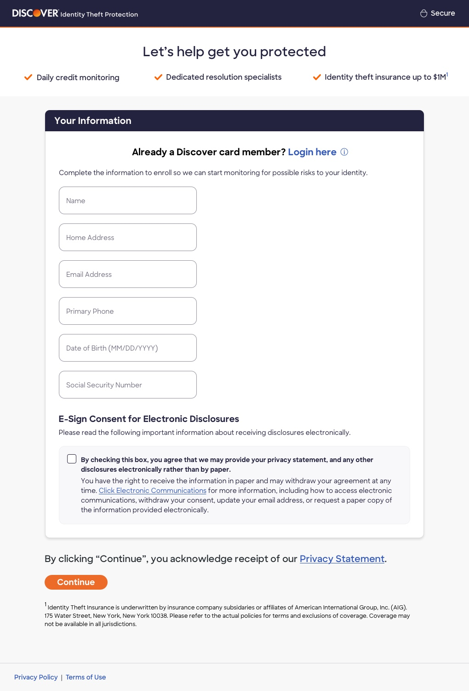

- My role
- UX Design Analyst, then Senior UX Design Analyst, at Kin + Carta
- Sole UX designer across five Agile teams
- Timeline
- October 2020 to May 2021
- Team
- Internal: product director, PM, scrum master, engineers, and me
- Client: product director, five PMs, five scrum masters, engineers, and legal
- Platforms
- Web at every viewport, and iOS
The short version
The challenge
To capture a new market while offering an exceptional experience: let people without a Discover card enroll in Identity Theft Protection.
What I did
Iterative design, usability testing comparing two flows, and the integration of a new design system and rebrand.
The outcome
Friends and Family launched in December 2020 and Broad Market in mid-April 2021, across 400+ screens. A design request process kept the next rebuild from becoming a bottleneck.
Methods and skills
- Usability testing
- Prototyping
- UX and UI design
- Manual accessibility testing
- Client relationships
- Ideation
On this page
Two features, one enrollment flow
- Identity Theft Protection (ITP)
- A service and feature set by Discover Financial Services that monitors personal information and identity, and offers resolution specialists.
- Friends and Family
- Lets existing Discover members add friends or family to their protection plan.
- Broad Market
- Lets brand-new users without a Discover card enroll in ITP.
I joined the Friends and Family project midway through its design and development. We kept refining the feature with five Agile teams before its launch in December 2020. Afterward, I worked on Broad Market, which let people enroll without a Discover account or card, using another vendor to handle transactions on non-Discover cards.
Following the Broad Market launch, I focused on accessibility for ITP's enrollment: performing manual accessibility tests and training Discover employees on accessibility considerations, working toward WCAG 2.1 compliance.
Design process
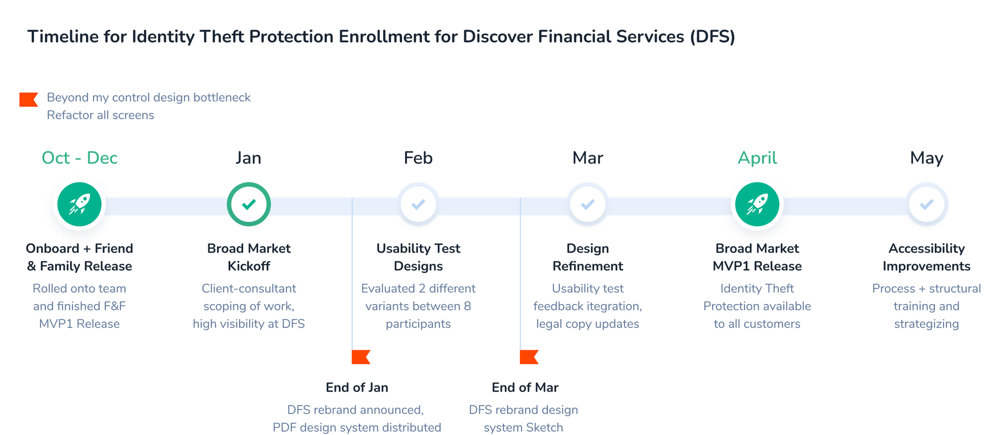
Key decisions
Test a condensed, single-screen flow against the multi-page one
The situation
Broad Market enrollment inherited several screens from the Friends and Family release, and we wanted to understand its nuances before committing.
What we did
Ran usability testing with eight participants comparing the multi-page flow against a condensed flow that combined screens into one.
What it informed
The Broad Market release on the right of each comparison below. Add which flow won and why.
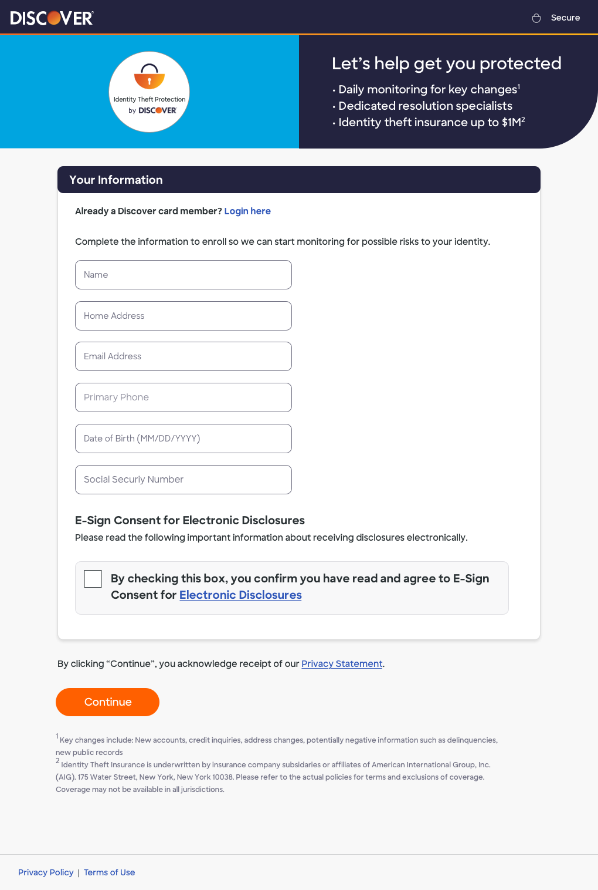
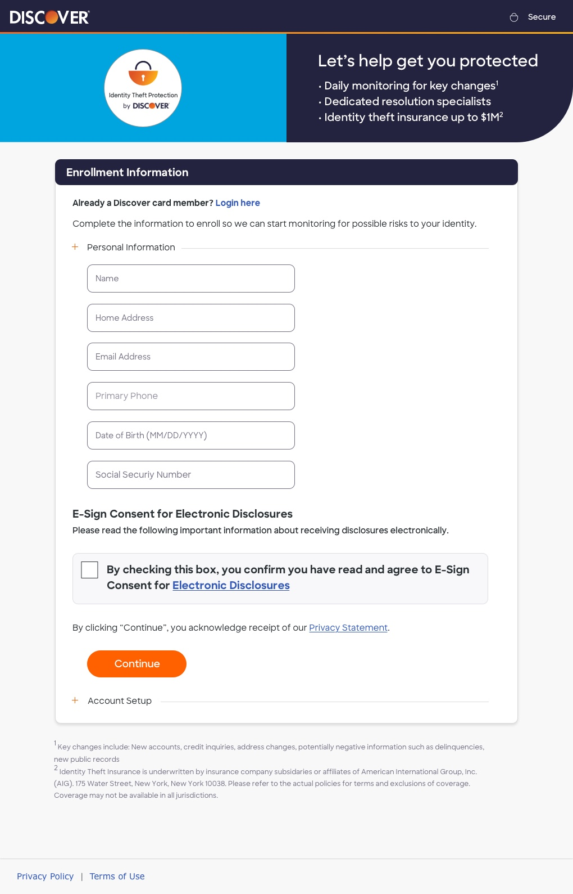
Rebuild every screen in the new design system, a month before launch
The situation
The new design system was handed off as a PDF, which had me estimating parts of the UI like the spacing between form fields. The real system arrived a month before launch.
What I chose
I went back through each screen and rebuilt it with the new components before Broad Market launched, syncing often with designers on the bank side of Discover to track which components had changed.
What changed after
We added a design request form, with requests routed to a Design Kanban board I managed, each with specific exit criteria so this bottleneck wouldn't happen again.
Design iterations
Each screen went through three versions: Friends and Family, the usability test built from the PDF design system guide, and the Broad Market release with the real design system and legal approval.
Enrollment form
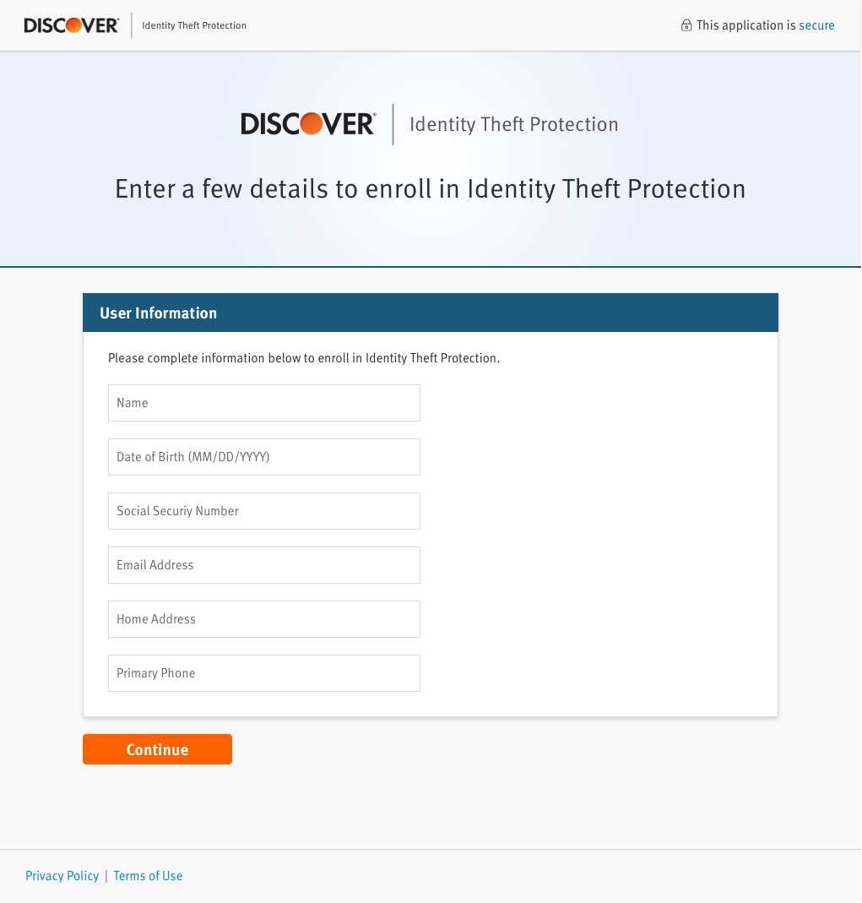
User ID and password
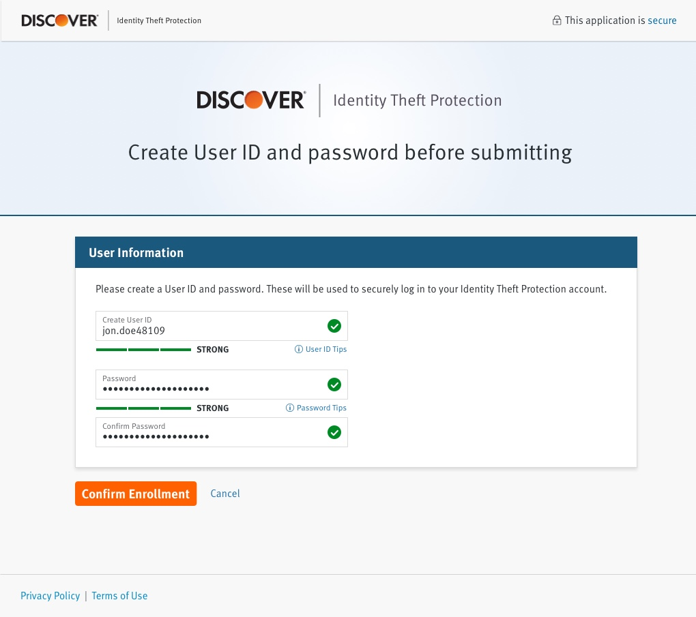
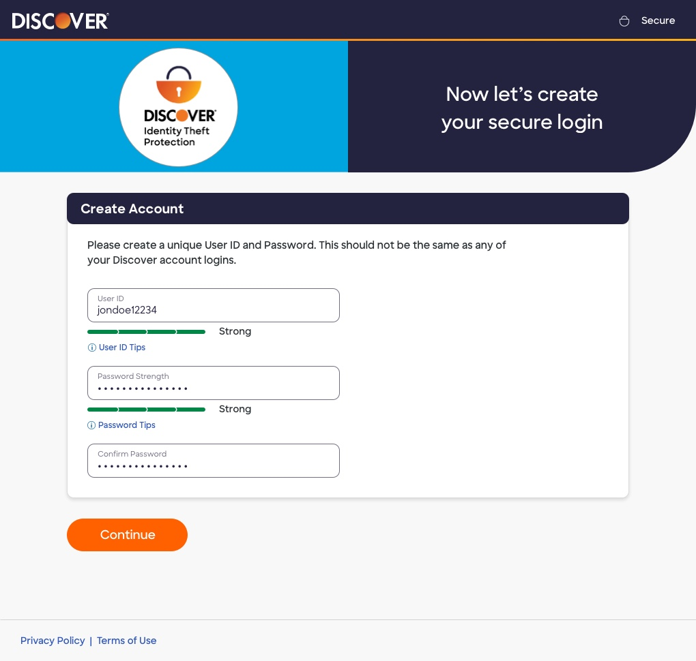
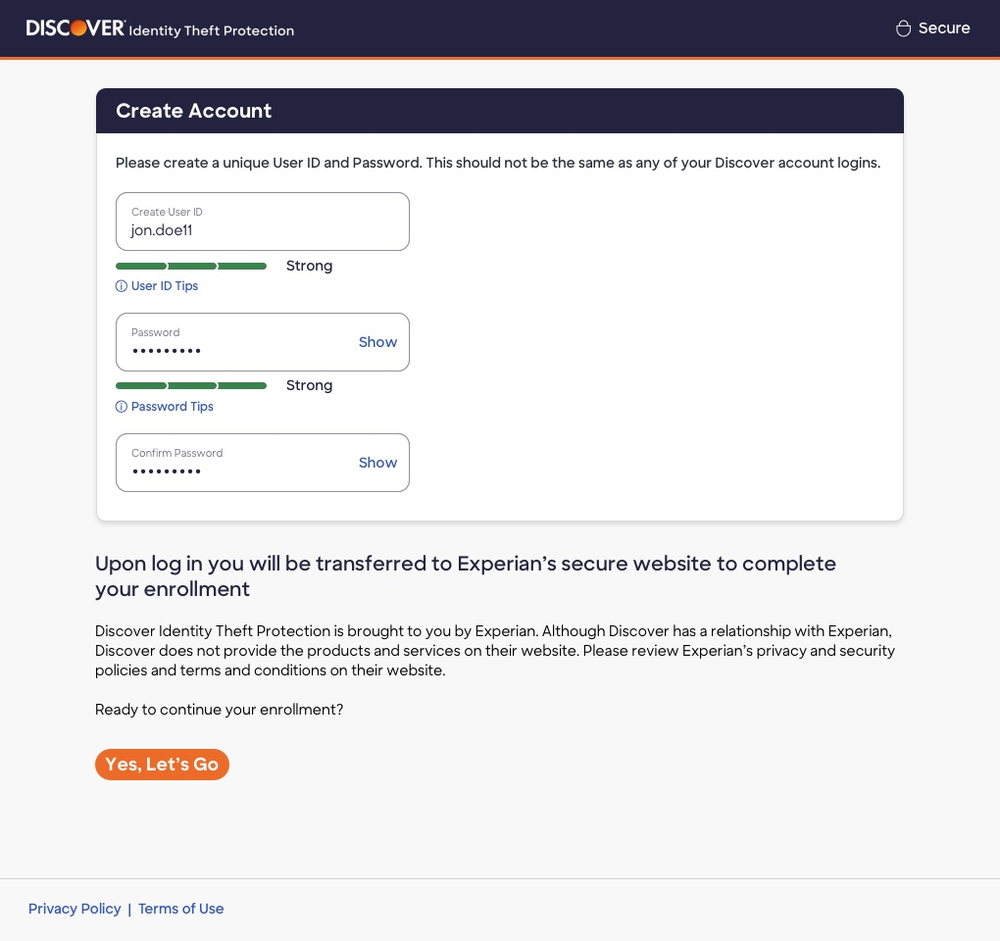
Annotated prototypes
Each Adobe XD prototype walks through the user flow at one viewport, with notes on the decisions and rationale behind changes between Friends and Family, usability testing, and the Broad Market release.
Web
- Desktop prototype(Adobe XD, opens in a new tab)
- Tablet prototype(Adobe XD, opens in a new tab)
- Mobile web prototype(Adobe XD, opens in a new tab)
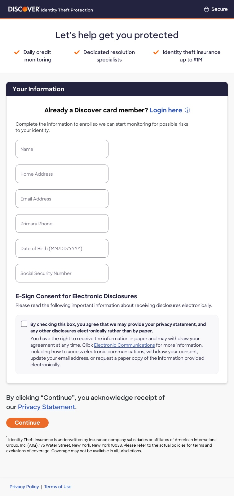
iOS
- Handset prototype(Adobe XD, opens in a new tab)
- Tablet portrait prototype(Adobe XD, opens in a new tab)
- Tablet landscape prototype(Adobe XD, opens in a new tab)
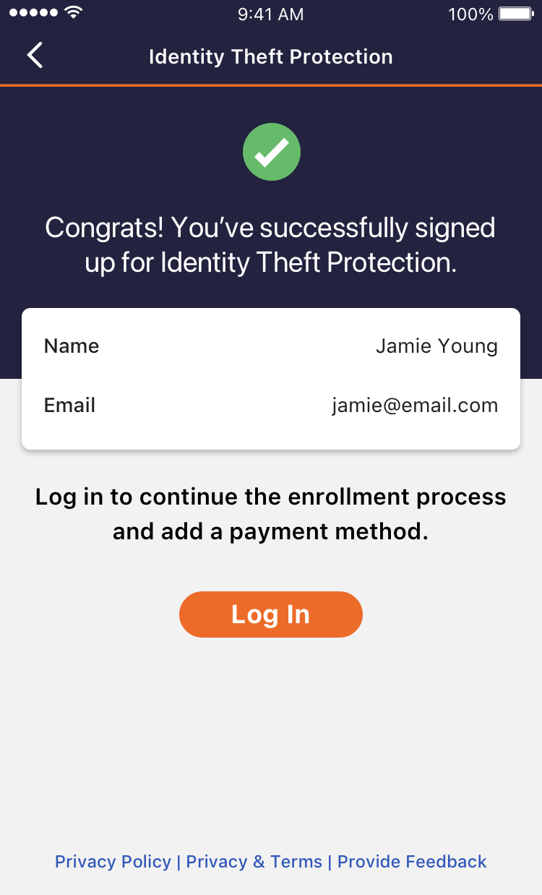
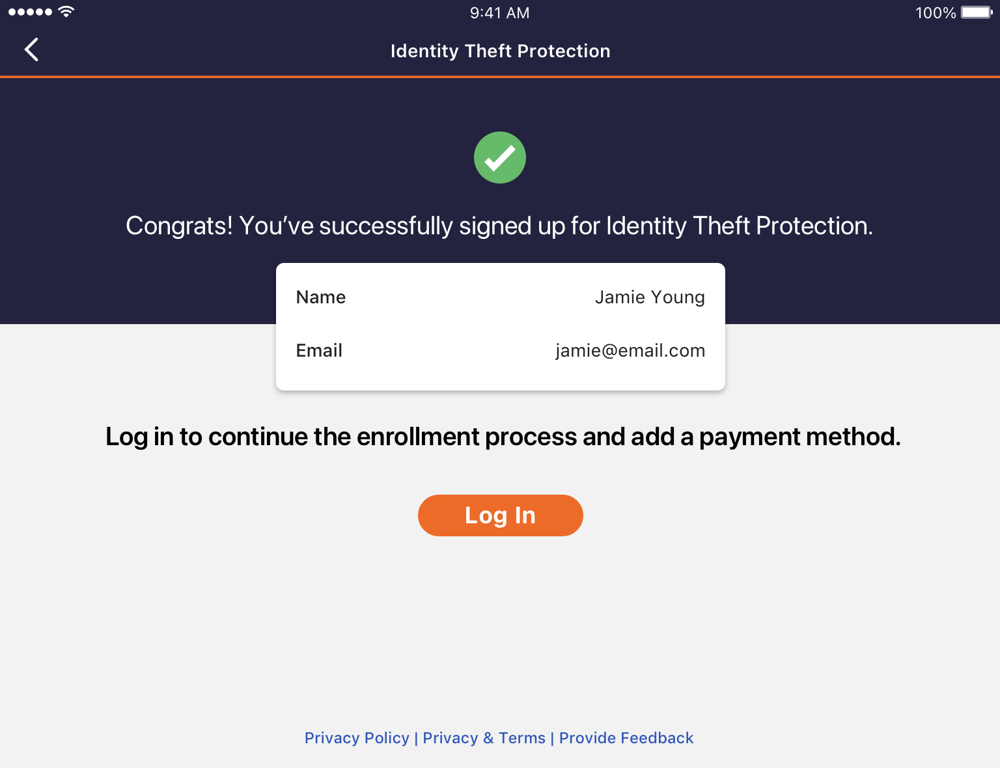
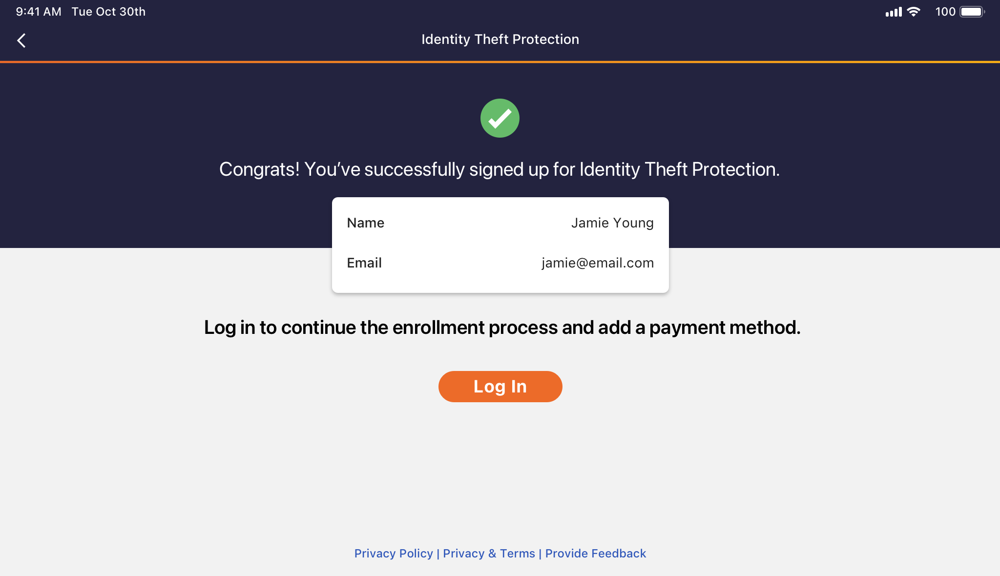
Usability test prototypes
These are the two flows we tested with eight participants. Our goal was to better understand the nuances of Broad Market enrollment and, ideally, condense several Friends and Family screens into one.
Outcome
- Dec 2020Friends and Family launched
- Apr 2021Broad Market launched, opening ITP to non-Discover cardholders
- 400+screens designed across web and iOS
- 8usability test participants comparing two enrollment flows
Reflection
What worked
The number of iterations on the enrollment screens allowed for many design considerations, and my visual design skills were used heavily in the early stages of Broad Market. I became more integrated into one of the development teams and worked closely with them to keep iterating and validating designs, making sure they were technically feasible while prioritizing what could reasonably go into the MVP launch.
What I'd do differently
I learned a lot about external factors that can affect the design process. Getting the design system as a PDF, then the real thing a month before launch, meant redoing every screen. The design request form and Kanban board with clear exit criteria came out of that, and I'd push for them from day one next time.